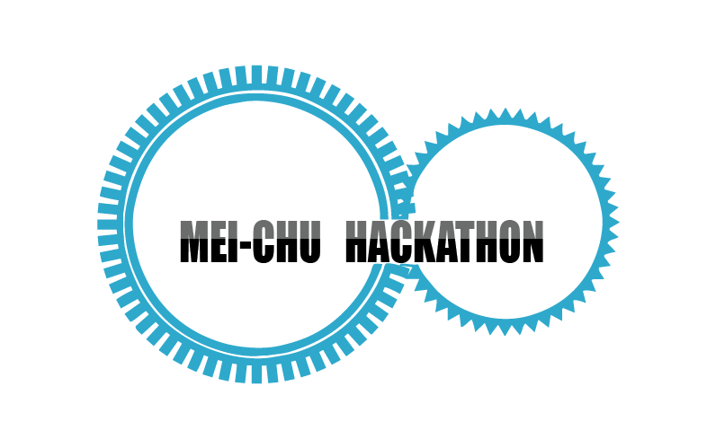

你，就是轉動世界的齒輪！
一場跨領域與腦力激盪的盛會
需要你的能力與創造力！
現正募集活動志工、企業合作及贊助

MEI-CHU HACKATHON
梅竹黑客松
2014.12.13-2014.12.14
地點：交通大學基礎科學大樓
參加對象：世界各地的「未來領航員」！
你，就是轉動世界的齒輪！
一場跨領域與腦力激盪的盛會
需要你的能力與創造力！
現正募集活動志工、企業合作及贊助
「Hackathon = Hack + Marathon。」
Hack原意是駭客，泛指對系統的操作方法、構造和運作原理非常了解的人，
之後衍生為動詞，指因應自身需求改造系統，或者乾脆從零開始打造。
Hackathon顧名思義，就像是工程界的馬拉松：
在有限的時間內，集合一群程式設計師及其他專業人員，日夜趕工，
將腦海中的構想或專案實現出來。在國外舉辦的黑客松，時間可能長達數日至一周不等。
傳統的黑客松是由參加隊伍發想提案，雖然自由度較大，卻缺少資源，且往往無法顧及現實的考量；
反之，企業舉辦的黑客松容易只聚焦在自家公司所遇到的瓶頸，出題有所侷限。
這次活動的開發主題皆由活躍於業界的企業所引導，同時提供獨有的資源輔助參賽者。
參賽者可以發揮所長，藉著企業提供的資源實現創意，也能和業者面對面交流，
而引導企業除了能挖掘人才，也被刺激著一同創新思考。
作品將於活動尾聲的成果發表、當場討論回饋，
若作品受到企業青睞，還能夠獲得企業贊助獎賞。
上屆交大黑客松成果紀錄
1. 活動當天在哪住宿？
Hackathon理論上是不會停下來睡覺的喔！不過，如果覺得太累想要休息，
也可以移動至休息區，趴在桌上小睡，或者自己帶睡袋來打地舖。
2. 活動進行中可以暫時離開會場嗎？
可以。這不是「入闈」，除了開場和閉幕，如果有需要，可以自行暫時離開，但要記得回來！
3. 活動具體內容是什麼？
這是秘密喔！快組隊報名來體驗一下就知道了。可以確定的是：來參加之後，一定會更認識自己、
技術更精進、認識不少新朋友，不虛此行！
4. 非來不可的理由？
與企業交流，直接認識業界的想法和需求，並以所學解決實際的問題，創造價值。
認識與你理念相近的伙伴，歷經兩天一夜的密集合作，凝聚出深厚的革命情感。
體驗微型創業，培養團隊合作的能力，就算未來沒有真的選擇創業，也會是職場上炙手可熱的人才！
舒適的會場、好吃的點心任你享用，這是最棒的工作環境！
5. 我不是交大的學生，請問我要怎麼到達會場？
請先至交通大學，地址：新竹市大學路1001號
地圖：交大校內地圖，Google 地圖
搭乘國道客運的話，建議在「科學園區站」下車，然後從大學路沿途步行到底即交通大學正門；
或者可以在「清華大學」站下車，然後穿越清大，走過清交小徑抵達交大。
坐火車來的話，在新竹火車站下車，然後轉搭市區公車2路，終點站即交通大學；2路班次較少，
也可以搭1路，至「過溝」站下車，然後沿大學路步行至底。車資單趟一律15元，
可以刷各縣市的智慧儲值卡。
新竹市區公車時刻表及路線查詢
若搭乘高鐵，請至新竹站下車，然後轉搭高鐵接駁公車，往東門市場方向，於「交通大學」站下車，
車資單趟15元，再延大學路步行至底。
或者搭乘交大校內接駁公車，可直達交大。
詳見：高鐵新竹站快捷公車
抵達交通大學後，請參照校內地圖前往活動場地。
http://www.nctu.edu.tw/intro/intro70.pdf
如果對交通方式還有疑問，歡迎來信詢問工作人員。
6. 我需要買回家的車票，請問活動會在幾點左右結束呢？
活動會在2014/12/14 週日 下午18:50左右結束！
7. 參加這個活動，需要什麼樣的能力？
如果您是自行組隊報名，則團隊中至少需有一人會撰寫出題企業指定的程式語言。開放報名時，
我們會提供企業出題程式語言的選項讓團隊勾選，並依此為您分配適合的題目。
而若您是個人報名的，只要您有一顆熱忱的心以及滿滿創意，則沒有一定要會撰寫程式的限制，
我們會幫您引介適合的合作伙伴。
8. 我要怎麼知道我報名成功了呢？
報名流程分成「網路報名」和「繳費」兩個階段。 大會收到您在網路上填寫的報名資料之後，
會寄信通知您已完成「網路報名」。 請注意：完成「網路報名」不代表已報名成功！
必須完成「繳費」之後才算是報名已成功！
9. 如果我成功錄取了，才發現當天有事無法到場參與怎麼辦？
若您在匯完報名費後發現不克參與，請在兩個星期前寄信聯絡工作人員！
我們將會退7成的報名費給您。
詳情請參考活動通網頁的繳費辦法。
工作人員信箱：hacknctu@googlegroups.com
10. 如果我沒被錄取怎麼辦？Q__Q
我們希望有心參與活動的人都能夠如願，但因適合的題目有限，所以可能會出現人數過多的狀況。
如果有釋出候補名額，我們會稍後公佈，請密切關注網站上的消息和大會發出的通知！
由有志一同的大學生、研究生、社會人士所組成
總召：黃怡芯
副召：林慈慈
公關：
文宣：
總務：
活動：
場器：
機動：
如您對梅竹黑客松有什麼建議或疑問，歡迎與我們聯繫。